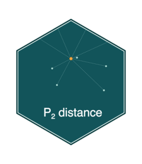
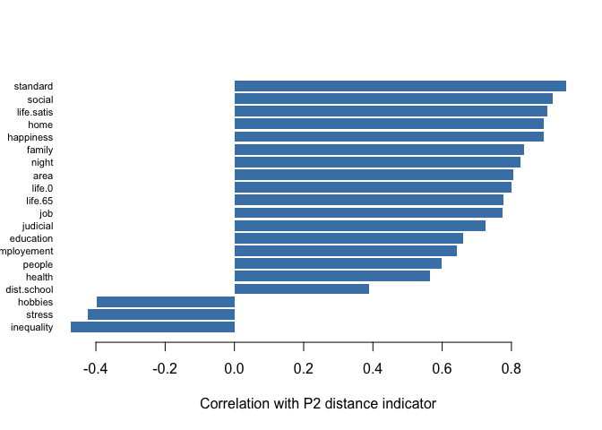
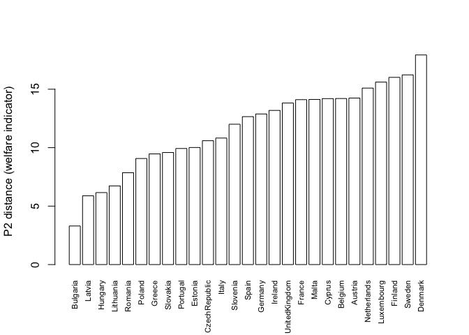

p2distance 
p2distance computes the P2 distance synthetic indicator (Pena, 1977), a method for combining several partial indicators — quality of life, welfare, environmental quality, development, and so on — into a single measure that lets you compare different entities (countries, regions, cities…) on a common scale.
Unlike Principal Component Analysis or other traditional aggregation methods, P2 avoids arbitrary weighting: each variable is weighted by how much new information it contributes once the variables already included are accounted for, using an iterative correction based on each variable’s coefficient of determination (R²).
Installation
Install the released version from CRAN:
install.packages("p2distance")Or the development version from GitHub:
# install.packages("pak")
pak::pak("ajpelu/p2distance")Example
p2distance ships with welfare, a dataset of 20 quality-of-life indicators for the 27 countries of the European Union (2002-2007, EurLIFE). Let’s rank countries by an overall welfare indicator:
library(p2distance)
data(welfare)
welfare_mat <- as.matrix(welfare)
ind <- p2distance(welfare_mat, reference_vector_function = min, iterations = 20)
#> [1] "Iteration 1"
#> [1] "Iteration 2"
#> [1] "Iteration 3"
#> [1] "Iteration 4"
# Ranking (higher P2 distance = further from the reference = lower welfare)
sort(ind$p2distance[, 1])
#> Bulgaria Latvia Hungary Lithuania Romania
#> 3.300577 5.881641 6.157913 6.728374 7.855658
#> Poland Greece Slovakia Portugal Estonia
#> 9.072606 9.467627 9.584544 9.927800 10.014157
#> CzechRepublic Italy Slovenia Spain Germany
#> 10.595075 10.822846 12.005987 12.653989 12.882661
#> Ireland UnitedKingdom France Malta Cyprus
#> 13.186726 13.817885 14.106968 14.124929 14.196170
#> Belgium Austria Netherlands Luxembourg Finland
#> 14.205152 14.243429 15.096630 15.608905 16.014650
#> Sweden Denmark
#> 16.225990 17.932001Each variable’s contribution to the indicator can also be inspected — here, how strongly each partial indicator correlates with the overall P2 distance:
barplot(
sort(ind$cor.coeff[, 1]),
horiz = TRUE, las = 1, col = "steelblue", border = NA,
xlab = "Correlation with P2 distance indicator",
cex.names = 0.7
)
barplot(
sort(ind$p2distance[, 1]),
las = 3, cex.names = 0.7, col = "white",
ylab = "P2 distance (welfare indicator)"
)
Background
The P2 distance was proposed by the Spanish economist Jesús B. Pena Trapero to measure social welfare (Pena, 1977), and has since been applied to environmental quality indices, regional development, and inequality studies (see ?p2distance for the full formula and additional references). See the Impact article on the package website for real studies that have used p2distance, together with download statistics.
References
Pena, J. B. (1977). Problemas de la medición del bienestar y conceptos afines (una aplicación al caso Español). Madrid: Instituto Nacional de Estadística (INE).
Pena, J. B. (2009). La medición del bienestar social: una revisión crítica. Estudios de Economía Aplicada, 27(2), 299–324.
Code of Conduct
Please note that the p2distance project is released with a Contributor Code of Conduct. By contributing to this project, you agree to abide by its terms.